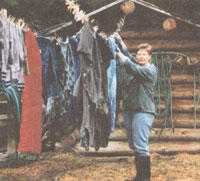

ENERGY AND ENVIRONMENT
LIVING OFF THE GRID
How One Family declared electrical independence without the sun, wind or water
For 18 years a diesel generator created power on our ranch in British Columbia. Six hours every evening it puttered through gallons of fuel while furnishing our family of four with modern conveniences. Eventually, these limited conveniences did not atone for rising fuel costs.
Modern technology, unlike fuel taxes, offered us an alternative-the fuel efficient Gencharger Power System. Nowadays we operate the generator once every six days instead of every day for six hours. Yet we have 24-hour independent power, and we use less than half the amount of fuel predicted by the experts on alternative energy. Installed in 1991, it provided the missing link between our lifestyle of choice and the demands of reality.
In 1974 my husband Ike and I bought 320 acres of wild land, located 45 miles south of Prince George, B.C. As it had no access, we first cleared a spot where we wanted our dirt road to join the graveled Blackwater road and built a log cabin on skids. Then Ike started logging and building the new road with a Cat. Slowly, dragging our cabin with us, we worked toward our land, three miles away. After reaching our goal, a miracle in itself, we started clearing land and planting new fields.
With the addition of two babies, we needed more space and started building a log house. As we settled our shoulders into the harness of responsibility, we found less time for simple chores like hauling water four miles from the closest neighbor or lugging frozen diapers 45 miles to the laundromat. So we invested in a deep well with an electric pump, a washing machine, and a diesel generator to operate them.
After harvesting our first hay crops, we needed a barn to put it in, cattle to feed it to, and miles of fences to contain the cattle. As the years passed and our farm evolved, the demands of our simple life became very complex-and expensive. Ike purchased a road grader and obtained snow plowing contracts to pay the bills, while I stayed home, taught correspondence, and cared for the livestock. In cold weather I couldn't start the generator by myself and the long winter evenings became even longer.
By 1989, 45 families had settled in the Blackwater area. Like us, they knew grid power would make life easier. So we banded together and formed the Blackwater Power Association (B.P.A.).
After petitioning B.C. Hydro, the B.P.A. was told power could be strung down the Blackwater road if everyone matched the $25,000 Rural Electrification Association grant. But this only brought the power to the end of our long driveway. There had to be an alternative, and we decided to look into less intrusive energy systems.
Wind, water, and solar were three systems we began to study from the very beginning. However, wind power wasn't viable because our winds are intermittent.
Hydropower wasn't an option because our creek freezes to the bottom some winters. We considered photovoltaic (PV/Solar) arrays, but in this northern latitude (our ranch is parallel to Edmonton), the biggest power needs are from November to April, when the sun retires early and gets up late.
Another option was a hybrid system: a small PV array backed up by a generator during the winter and peak load times. Several neighbors were also considering hybrid systems. Therefore, eight families formed a group and approached then Minister of Agriculture, John Savage, about an alternative-power project. He recommended we contact the B.C. Agricultural and Development
Corporation (ARDCORP). When our group contacted Bill Twaites, ARDCORP's program coordinator, he agreed to accept one application for a demonstration project. Subject to approval, ARDCORP would provide this single project with a maximum reimbursement of $10,000, or two-thirds of the funds. The applicant must provide the balance of $5,000.
We held another meeting and drew straws. Everyone understood the amount of paperwork an ARDCORP project involved, and several members opted out. After we won the draw, our neighbors cheerfully offered us sharpened pencils and congratulations-then quietly mopped their brows.
At first, we proposed a hybrid system consisting of eight 48-watt solar panels, a gas generator, inverters, and batteries. The batteries would store the power created by the solar panels and generator as direct current (DC). Two inverters would convert this DC current into alternating current (AC) for tools and appliances needing grid power. This hybrid system required dual regulating systems to monitor the input of current from both power sources.
To determine the size of system our farm required, ARDCORP asked us to fill out a System Loads Worksheet. This worksheet listed our AC loads, wattage, and hours of expected use per week. These columns are totaled and used in calculations similar to an income tax form. (Multiply line 1 by 1.5; divide line 2 by line 3) By using this worksheet's calculations, we figured a total of 4,922 amp hours per week loads, which seemed high to us. But we had nothing to compare it with, so after double-checking our figures we contacted ARDCORP.
Mr. Twaites suggested we submit our figures to Photron, a company specializing in alternative energy. Their Canadian representative, Ron LaPlace, had a new computer program, "System-Spec," that used the data in these worksheets to determine the number of solar panels required, the size of generator needed, and the fuel it would consume in assisting the PV array.
Photron based their report on our worksheet, but we were stunned by some of the resulting figures. So was ARDCORP This hybrid system exceeded the budget by $4,000 due to the high costs of solar panels and dual components. Also, ARDCORP felt our demonstration project might not be feasible based on the projected operating costs for the gas generator.
The report stated a 4,400 watt (4.4 kw) gas generator must operate 4.1 hours per day to assist the solar panels in charging the batteries, burning 1,245 gallons (U.S.) per year. At Canadian gasoline prices of $0.50 a liter ($1.90 a U.S. gallon), we figured a cost of $197 a month. This seemed high, but we agreed with Photron's suggestion that a diesel generator would be cheaper to operate than a gas one, and based our response on practical experience.
We wrote ARDCORP that a neighbor used to operate an 18,000 watt (18 kw) diesel generator. He ran it 24 hours a day, seven days a week, for his electric cook stove, fridge, deep freeze, deep well pump, washer, dryer, large home, and six kids. This big generator, running fall-time, cost him $300 a month in fuel.
In comparison, we have a propane fridge, cook stove, and water heater, moderate-sized home, and two kids. For years we managed with a 4.5 kw Lister diesel generator. It ran for six hours a day, burning 12 gallons per week, costing about $60 a month to operate.
Our practical knowledge didn't impress ARDCORP. They felt alternative energy systems were a specialized field. To quaky for the grant, they told us to cut costs by lowering our requirements. They recommended we adjust our worksheet, then consult Photron again.
We decided to refigure the worksheet, viewing it as a challenge rather than an ultimatum. Besides, we didn't want to let our neighbors down.
Adjusting the sheet meant erasing old, projected workloads and penciling in fresh numbers, although our intended workload never changed. But we kept juggling numbers and submitting worksheets until we found the magic combination that satisfied all the experts. According to the approved worksheet, our farm required 110 amp hours per day to operate energy-efficient lights and a few tools.
To cut costs, we deleted the PV array and suggested using a diesel generator as the only power source for charging the batteries. We contacted several alternative-energy experts about this proposed system. Our big questions were: How often would the generator need to be started, and how much fuel would it consume while charging the batteries? Surprisingly, we found little information available, but Photron speculated the fuel would cost about $100 a month. ARDCORP, at our request, added meter bases to the project so we could collect data on this new system.
The project was finally approved 18 months after our initial inquiry. Officially dubbed the "Gencharger Farm Power Project," it was the first of its kind in B.C. It received the maximum grant, but we only had seven weeks to get everything ordered and installed before the funding ran out. We didn't have time to mull this over; a truckload of paperwork drove us forward.
First, we ordered the electronic components from Photron in California. When they said it would take six weeks to assemble the Powerboard (a heavy 18" x 5' plywood board with meter bases, inverters, breaker box, surge protector, and system analyzer mounted on it), we asked them to please rush. We also ordered the battery charger from Photron, which was shipped separately.
Then we ordered an 8 kw China Diesel generator from California. This generator was part of our contribution to the project. To house the Gencharger system we purchased a 10' x 14' prefab building, also part of our contribution. Assembling this shed was a family project. To strengthen the roof we erected a partition wall, dividing the shed into two rooms. Our biggest concern was keeping the batteries from freezing, so we insulated the walls and ceiling with 2" Styrofoam. Also, when the temperatures drop to -10°F and lower, Ike runs the generator every day for two hours. While charging, the heat from the generator warms the batteries.)
Next, we started shopping around for batteries, also part of our contribution. At a battery recycler, Ike bought 12 two-volt batteries for $50 each. Fortunately, they were in excellent condition. Installed on metal racks and connected with welding cables, they gave us 24 volts and 1,320 amps of DC current.
During those hectic seven weeks, both Customs and the Postal Service went out on strike. But somehow the generator and battery charger arrived within a month. And two days before the deadline we received the Powerboard.
Everything on this Powerboard is state-of-the-art. Two standard meter bases are mounted at the top and linked to the in verters below. Two Trace inverters are mounted shoulder-to-shoulder, one above the other. If one needs to be serviced, it can be disconnected and the remaining unit will provide power (at a reduced capacity) until the failed inverter can be serviced or replaced. Mounted below the inverters is Photon's Source Center: a large circuit breaker box with a surge protector attached to its side. And mounted on the door of the breaker box is the system analyzer with LED display showing the current voltage of the batteries. You can tell at a glance if your batteries are guilty of low voltage, and it squeals if the batteries are low. You can hear this buzzer from 30 yards away.
Heavy-gauge welding cables connect the source center to the batteries, generator, and battery charger. Linking everything together wasn't even a hardship. Ike had the system up and running within hours.
The 150-amp battery charger weighs 150 pounds and is the size of a welder. It takes about 12 hours to fully charge our batteries. It also takes about 12 hours to do the laundry because we have a poor well with a slow recovery rate. Although the inverters easily start and run my automatic washer and the radial-arm saw, these jobs are usually saved for "charge days" to conserve the batteries.
The 8,000-watt generator meets all our power needs. It gives 220 volts of AC power and is wired directly into Photon's Source Center. The source center monitors the current, providing the 220-volt battery charger with 3,600 watts while also providing our 110-volt household service with over 4,000 watts of AC power when the generator is running. When we switch to the batteries, each of the two inverters give 2,900 watts, and each handles surges up to 6,000 watts. Both inverters are wired into the house and shop, giving us 5,800 watts of continuous AC power.
Since installing this Gencharger system in October of 1991, we've monitored fuel consumption, operating time, and the kwh used. Last year our generator, unassisted by a PV array, averaged $43 a month in fuel. Based on the experts, it should consume 2,984 liters of fuel, costing $97 dollars a month.
We use about 6 kwh a day to operate energy-efficient lights, various power tools, small appliances, color TV, VCR, computer, microwave, vacuum cleaner, and pump for the well. The experts predicted we'd need 110 amp hours a day, or 16 kwh, just to operate fluorescent lights and a few tools. The propane bill for our fridge, cook stove, and water heater costs an additional $20 a month, bringing our utilities to $65.
Why the difference between the predictions and the real world? Bob L'Italien, an electrometrist for B.C. Hydro, says, "The worksheet gives you the total load, but the demand is the factor that determines the size of the equipment needed:" However, the demand can't be determined unless you know how much power you'll need once it's available.
That factor aside, we did accomplish our goal: The Gencharger's made our simple life easier. It's given us the best of both worlds: the startling beauty and quiet of the country with, wonder of wonders, a magic machine that washes your clothes.
|
Ike stands next to the Powerboard, on which are mounted twin meter,inverters and the Source Center |
No more lugging frozen diapers 45 miles to a laudromat. |
 The sole source of power to the batteries is a China Diesel 8kw generator. |
|
|
|
|